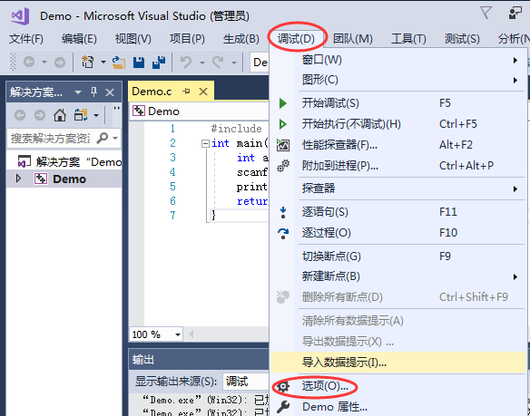
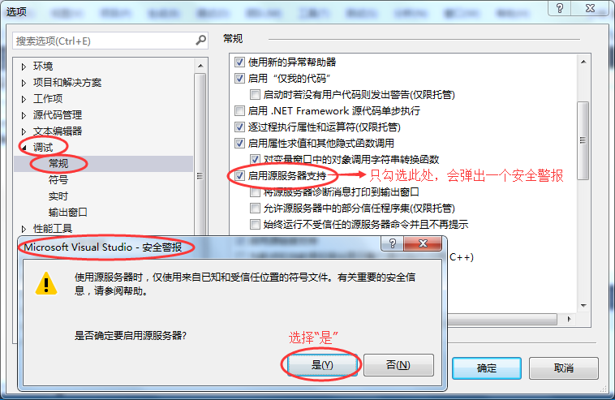
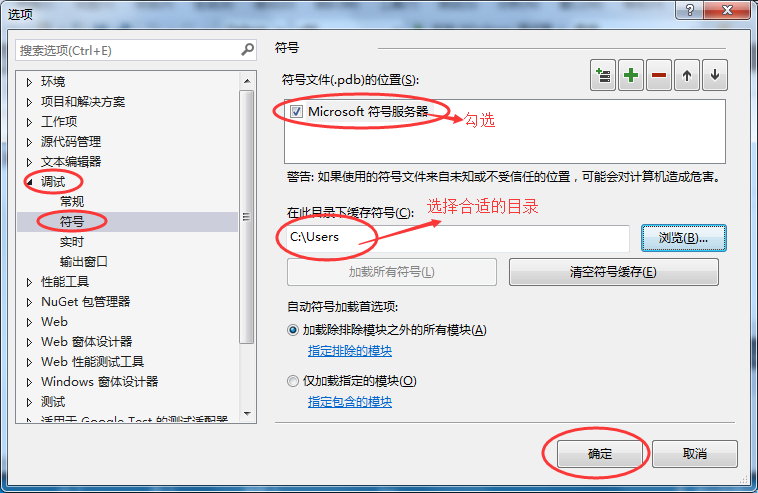
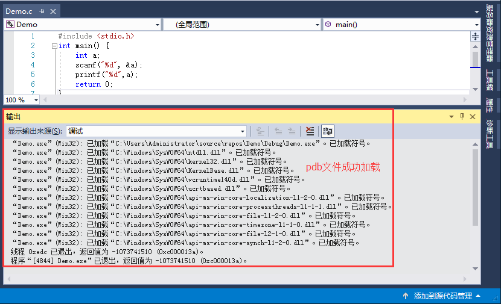

VS“无法查找或打开PDB文件”是怎么回事？如何解决
有时候，我们使用 VS（Visual Studio）编译程序时会出现“无法查找或打开PDB文件”的提示，并且此时程序会生成失败，无法运行，如下图所示：

大家不要惊慌，出现这种提示并不是代码写错了，而是编译器设置的问题，改一下设置就 OK 了。
pdb 文件主要用于调试程序，多用于当VS中有多个项目，且项目之间互有依赖关系时，使用pdb文件调试程序，往往会事半功倍，初学者一般不会用到。
当使用VS 调试程序时，会默认加载你的程序以及程序依赖的dll库产生的所有pdb文件，但是结果往往是VS自己找不到依赖库的pdb文件，于是就提示给你“无法查找或打开pdb文件”。
1) 选择菜单栏中的“调试 --> 选项”，如下图所示：
2) 弹出“选项”对话框后，选择“调试 --> 常规”，在右侧选项栏中勾选“启用源服务器支持”（包含的 3 个子选项不用勾选），此时会弹出一个安全警报框，选择“是”即可，如下图所示：
3) 还是在“选项”对话框中，选择“调试 --> 符号”，在右侧选项栏中勾选“Microsoft符号服务器”，此时会弹出一个提示对话框，点击“确定”即可。同时，对于缓存符号的目录，选择图示中的目录即可：
4) 确定之后，重新运行你的程序，首次运行时，由于编译器会加载所有动态链接库的pdb文件，可能会等到几秒钟。程序运行后，之前输出窗口中的“无法查找或打开pdb文件”的提示不见了，如下图所示：
如上图所示，由于pdb文件，又名“符号文件”，所以“已加载符号”，也就是成功加载了动态链接库对应的pdb文件。
大家不要惊慌，出现这种提示并不是代码写错了，而是编译器设置的问题，改一下设置就 OK 了。
先说一下PDB文件是什么
当程序在 VS 上编译时，程序所依赖的所有动态链接库（dll 文件）也会被编译，编译过程中每个 dll 都会产生一个pdb文件，又称为“符号文件”，是一个存储数据的信息文件，其包含 dll 库在编译过程的某些调试信息，例如程序中所用到的全局变量、局部变量、函数名以及他们的入口地址等。pdb 文件主要用于调试程序，多用于当VS中有多个项目，且项目之间互有依赖关系时，使用pdb文件调试程序，往往会事半功倍，初学者一般不会用到。
当使用VS 调试程序时，会默认加载你的程序以及程序依赖的dll库产生的所有pdb文件，但是结果往往是VS自己找不到依赖库的pdb文件，于是就提示给你“无法查找或打开pdb文件”。
如何修复这个错误
我们可以通过对 VS 做适当的设置，使之能够查找到相应的 PDB 文件，具体步骤如下（这里我们以 VS2017 为例进行说明，其它版本的 VS 操作步骤也一样）。1) 选择菜单栏中的“调试 --> 选项”，如下图所示：

2) 弹出“选项”对话框后，选择“调试 --> 常规”，在右侧选项栏中勾选“启用源服务器支持”（包含的 3 个子选项不用勾选），此时会弹出一个安全警报框，选择“是”即可，如下图所示：

3) 还是在“选项”对话框中，选择“调试 --> 符号”，在右侧选项栏中勾选“Microsoft符号服务器”，此时会弹出一个提示对话框，点击“确定”即可。同时，对于缓存符号的目录，选择图示中的目录即可：

4) 确定之后，重新运行你的程序，首次运行时，由于编译器会加载所有动态链接库的pdb文件，可能会等到几秒钟。程序运行后，之前输出窗口中的“无法查找或打开pdb文件”的提示不见了，如下图所示：

如上图所示，由于pdb文件，又名“符号文件”，所以“已加载符号”，也就是成功加载了动态链接库对应的pdb文件。
关注公众号「站长严长生」，在手机上阅读所有教程，随时随地都能学习。内含一款搜索神器，免费下载全网书籍和视频。

微信扫码关注公众号